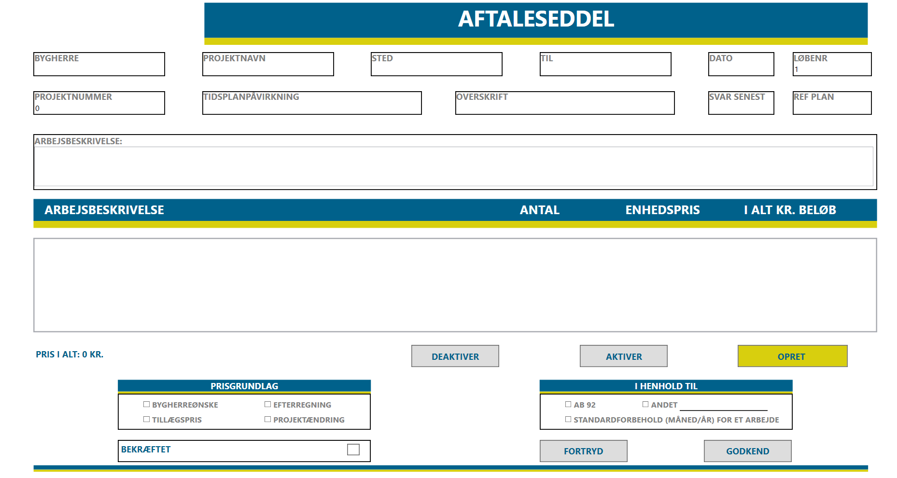
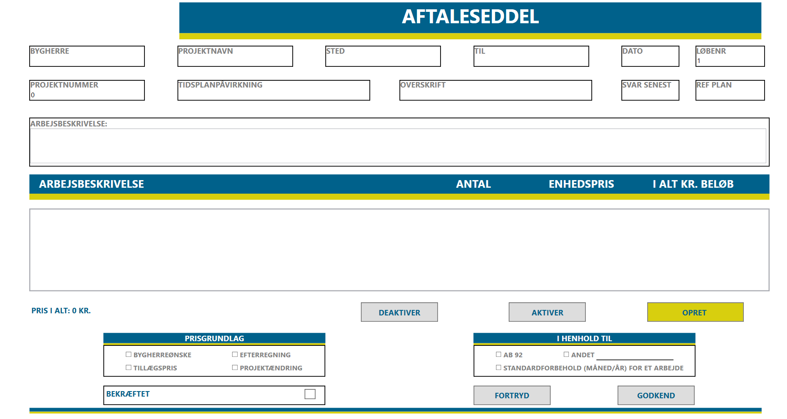

Min rolle
Først og fremmest agerede jeg som kontaktskaber til virksomheden. Jeg havde ansvar for at formidle teamet nuværende egneskaber og kravsindsamle de ønsker som blev stillet af product owneren.
Derudover udarbejdede jeg system-
dokumentation og implementerede create og delete funktionalitet, samt UI i WPF.
Værktøjer & Teknologier
C#
Visual Studio
WPF(XAML)
MVVM arkitektur
Adobe XD
Visio
Bemærkelsesværdige features
CRUD funktioner til aftaleseddler ved brug af filereader til lokal tekstfil
 
